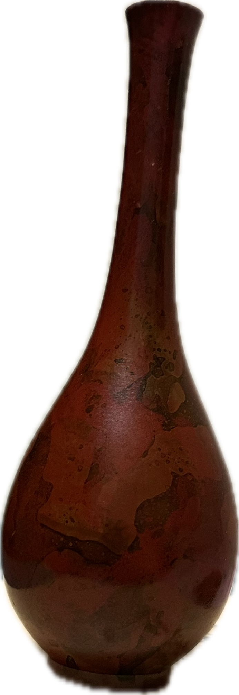
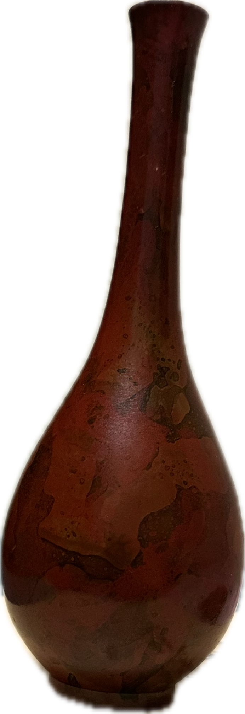

About Me
I was born in Guangzhou, China. It belongs to a greater area known as "Canton" (“粤” in chinese). I completed my high school and undergrad education in California.
I first step into gym in the summer after high school education, since then working out becomes an inseparable part of me.
Through out the years, my interst in fitness has extended to nutrient control and experimenting self-care technique in general. I am happy to have conversation on this topic.
The other thing I hold dearestly to my heart is a love of Aesthetic and design
I pay attentioned to the placement of object in my room, the color, the layout, and it is a hobby of mine to experiment different layout in regular basis
I also have a fond of appearance and outfit, POPEYE is my favorite magazine
For traditional art, the timeless pieces for me are drawings of Alphonsa Mucha, who leads Art Noveau movement
@gtsleep1200, is my favorite illustration artist, who posted in occasion on X (formely twitter), you can see some common theme between the illustrations to those of Mucha's
I like Jazz, R&B and anything that has a grain of either element.
My favorite band is Chelmico.
 



Education Background
I was involved in robotics in high school, and admitted to university of California, Irvine as a Mechanical Enginnering major, which I received one year of training in fundamental math and physics. I later learned that for robotics the major I should go to is Electrical Engineering.
In my second year, I transferred into Informatics major, cultivated with the spirit of Human-center approach of computing
In my fourth year, I took on Computer Science as my double major to add more technicality to my skillset.
Therefore, you might see me discussing the implementaiton detail of potential technology while rambling how it might influence the dynamics in society. This is my thing.
Lastly, two majors I wish to learn more are Mathematics and Cognitive Science
Mathematics allows me to understand principle behind technology (especially Computer Graphics!) and in general improved my literacy in reading academic paper
Cognitive science help me understand & others (and how we might build machine that replicate our mind!)

Projects
- Optometry research: How does fixation stability change with stimulus size?
- Mechanistically Interpretability research: can LLM report certainty?
- Informatics research: Portioning - LLM driven portioning system with University cafeteria
What-if ?
- What if parts of LLM can be ablated, boosted or swap-out like batteries?
- What if we can digitized hand-written notes into structural data?
- What if we can order food on doordash with nutrient constraint in mind?
- What if we can have student's voice appears on screen while lecturing?
- What if we can get digital twins of products we bought and displayed them in virtual desktop?
- What if we can make blogging easier by adding auto-updated widget from each website?
- What if we can highlight text on any media and stored them in one central place?
- What if we have public forum that focus on crowd-sourcing product design? (live-collboration! Stranger! Brnaching!)
- What if we can drag component on developer console and have the broswer guess and apply css styling in real time?
- What if we can attach simple snippet of logic and thinking as comment to one's text online?
- What if we can crowdsource UX/UI feedback by allowing user to circle & complaint on our website?
- What if we treats articles and videos like box-of-cookies to savor instead of infinite scrolling?
- What if I can document: ideas -> explained -> prototyped, posted on this website to demonstrate my thought process?
- What if we have a CSS framework that enforced good layout practice?
- What if with one wink we replace one eye's vision with VR and another open for merge vision?
- What if we can have AR venue across university campus?
Crafts!
To be coming..
Where-to?
- I want to be a complete person, that means:
- Have clarity of mind (all the time!)
- Know and use my body to its full extent
- Have good taste of art
- Know how to interact and thrive with others
- I want to be a Design Technologist
- I want to be literate in Artificial Intelligence, if not contributing to it
- I want to master Russian Planche !
- I want to master Grid systems
*current* belief
- One ought to focus on very selected few of things every day.
- One should pay attention to his appearance, as that's usually the foundation of trust among strangers.
- Fews can achieve great things along, communication is a must-learn skill.
- 实事求是。
- 战略上的藐视和战术上的重视都是为了战胜敌人。
- The goal is to be a clearer version of yourself, not everyone else.
- The one and only goal of design is communication.